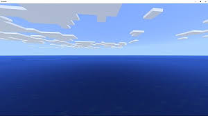
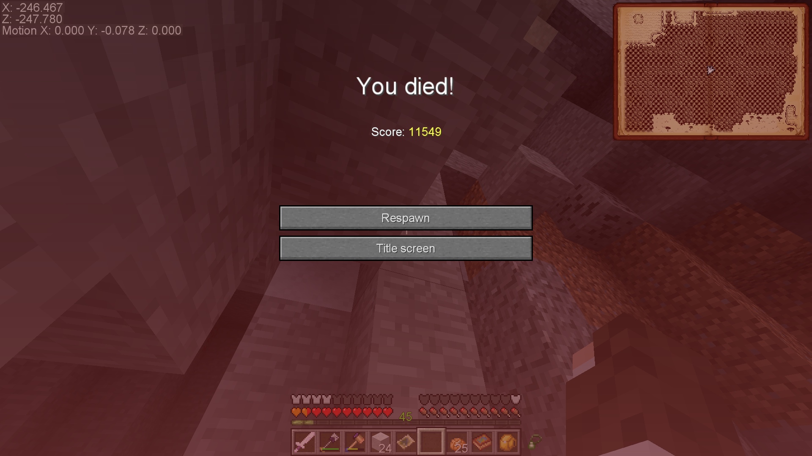

You may get a bit disoriented the first time you load up a world in RLCraft. The way the chunks are loaded cause them to appear to rise from the ground, and this can sometimes make it look like you're falling if you're in an unloaded chunk (such as when you first spawn in). When you first spawn into you world, you can expect to see something like this:
Most likely, within the next 15 seconds, you'll see something like this:
The ocean is filled with dangerous things like sirens, sea serpents, and - flying over it - dragons. All of these can kill you within seconds.
If you've managed to survive for more than a minute, then congratulations! You're finally ready to get started!